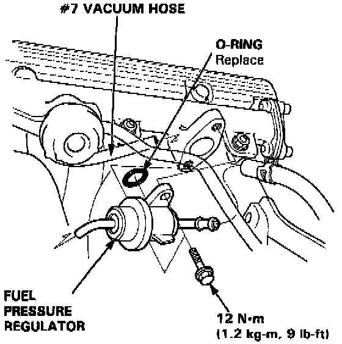

Fuel Pressure Regulator: Service and Repair
PROCEDURE
WARNING: Do not smoke while working on fuel system. Keep open flame away from your work area.
1. Place a shop towel under the fuel pressure regulator, then relieve fuel pressure.

2. Disconnect the vacuum hose and fuel return hose.
3. Remove the two 6 mm retainer bolts.
NOTE: Replace the 0-ring. When assembling the fuel pressure regulator, apply clean engine oil to the 0-ring and assemble it into its proper position, taking care not to damage the 0-ring.